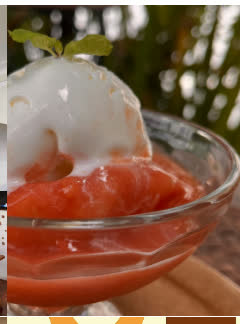
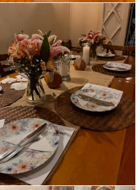
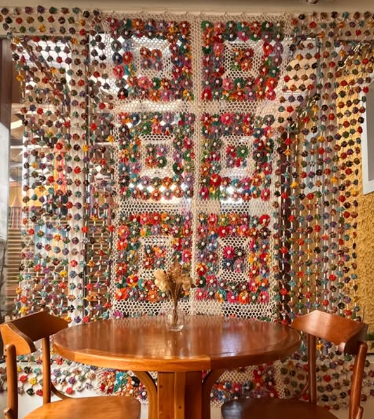
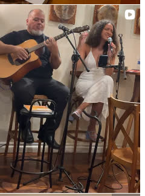
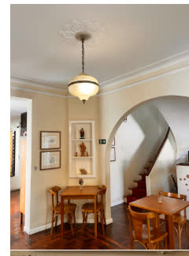
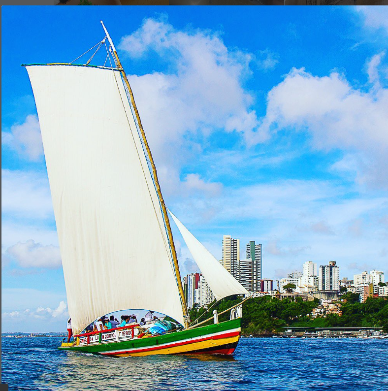

Ingredientes brasileiros
Sabores que começam na origem e continuam na memória.
01 Culinária do Recôncavo
Uma mesa para conhecer a culinária baiana contemporânea, onde ingrediente, receita e memória se encontram no coração da Barra.


02 Nossa identidade
O Recôncavo Culinária é um convite a provar a Bahia com olhos contemporâneos: receitas que atravessam gerações, ingredientes com origem e uma hospitalidade que faz da mesa um lugar de encontro.
Da cor das miçangas ao som que acompanha a noite, cada escolha da casa traduz uma relação com o Recôncavo Baiano — sem perder o essencial: cozinhar com cuidado e receber com verdade.
Conheça a experiência
Sabores que começam na origem e continuam na memória.
Sabores conhecidos, atualizados e compartilhados à mesa.
Uma cozinha atenta ao detalhe e ao acolhimento.
04 A experiência
A cultura baiana aparece em pequenos gestos: na cortina de miçangas, na madeira, na música ao vivo e no cuidado de receber.

“A melhor parte de uma receita é a história que ela continua contando.”
No Recôncavo, cada detalhe ajuda a construir essa história. A experiência não está apenas no que chega à mesa, mas no tempo de ficar, na música que acompanha e na forma de receber.
Ver o Instagram da casaReferências que vieram antes.
Tempo, cuidado e acabamento.
A mesa como lugar de dividir.
05 Galeria
Entre uma taça, uma mesa posta e uma noite de música, a casa revela o seu jeito de receber.


06 Visite a casa
Confira o cardápio, chame no WhatsApp e organize a sua visita.
Barra · Salvador · Bahia
Abrir no mapaNão abrimos às segundas-feiras.
Confirme antes de visitar.WhatsApp para informações e contato.
Chamar no WhatsAppConfira a localização, trace uma rota e veja as informações públicas atualizadas do restaurante.
Abrir no Google Maps Ver avaliações públicas07 Antes de visitar
As respostas rápidas para planejar sua ida ao Recôncavo Culinária.
O Recôncavo Culinária fica na Rua Professor Fernando Luz, 63, no bairro da Barra, em Salvador, Bahia.
O cardápio atual está disponível no cardápio digital da casa. Consulte os valores e a disponibilidade atual antes de visitar.
Use o WhatsApp (32) 99929-2311 ou ligue para (32) 99929-2311.
As informações fornecidas indicam funcionamento de terça a domingo, das 11h às 22h, sem abertura às segundas-feiras. Confirme antes de visitar.
A riqueza da culinária afro-baiana com dendê autêntico, frutos do mar e afeto.
Acarajés crocantes fritos no dendê puro, moquecas de camarão e frutos do mar com o tempero tradicional do Recôncavo.